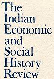

|  The Indian
Economic and Social History Review Volume XL Number 3 July-September 2003 HERMAN TIEKEN / Old Tamil Cankam literature and the so-called Cankam period, p. 247 AWADHENDRA SHARAN / From caste to category: Colonial knowledge practices and the Depressed/Scheduled Castes of Bihar, p. 279 DICK KOOIMAN / Meeting at the threshold, at the edge of the carpet or somewhere in between? Questions of ceremonial in princely India, p. 311 STUART BLACKBURN / Colonial contact in the 'hidden land'" Oral history among the Apatanis of Arunachal Prdesh, p. 335
Webbed by Philip McEldowney |